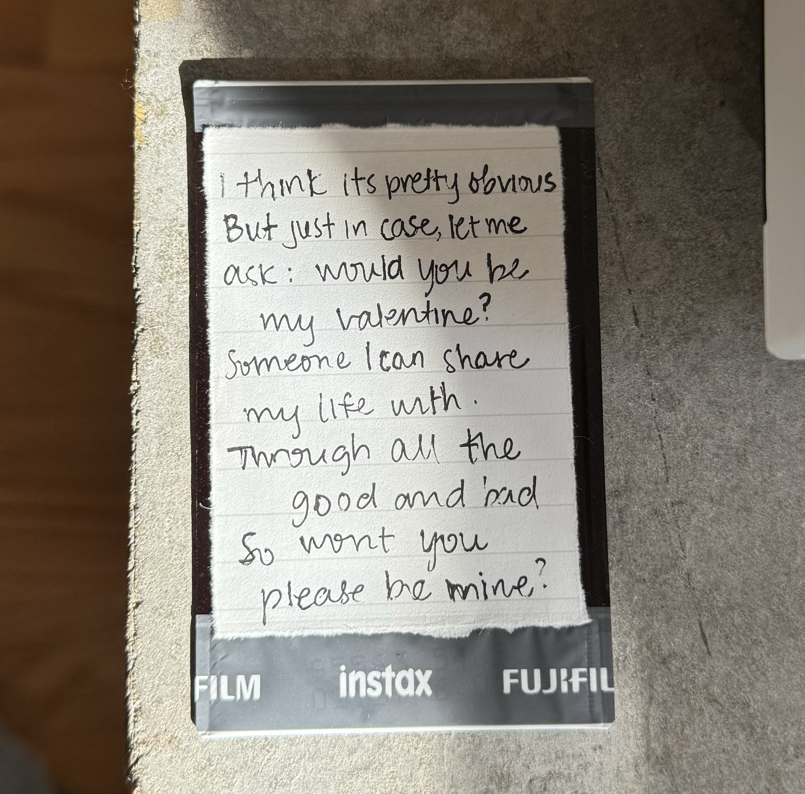
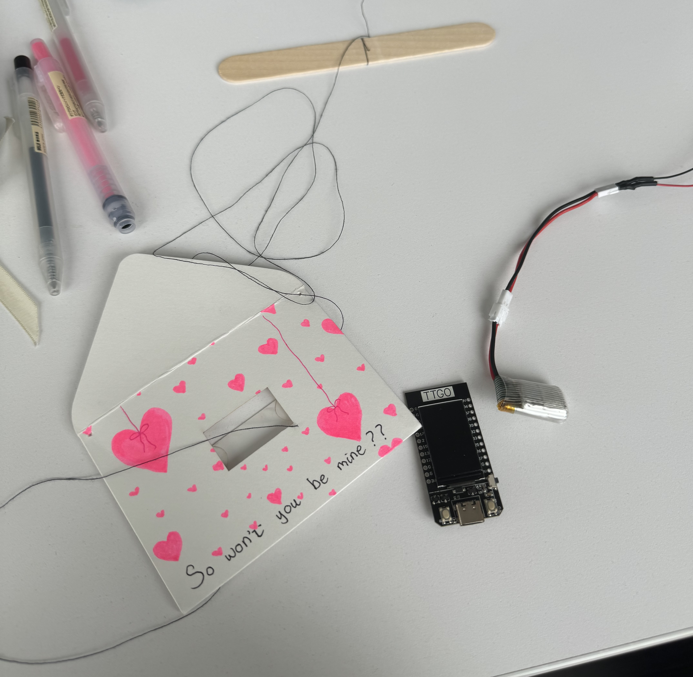
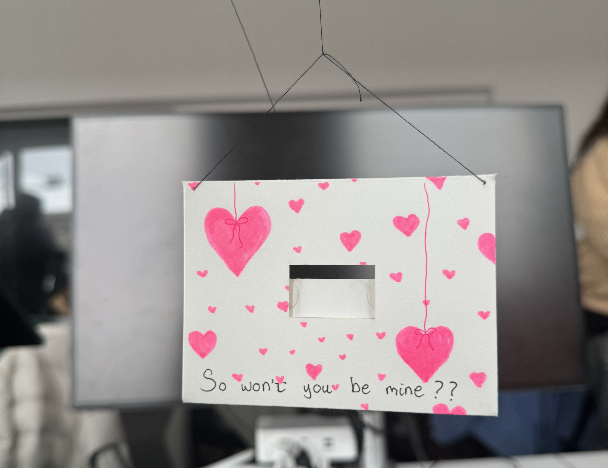
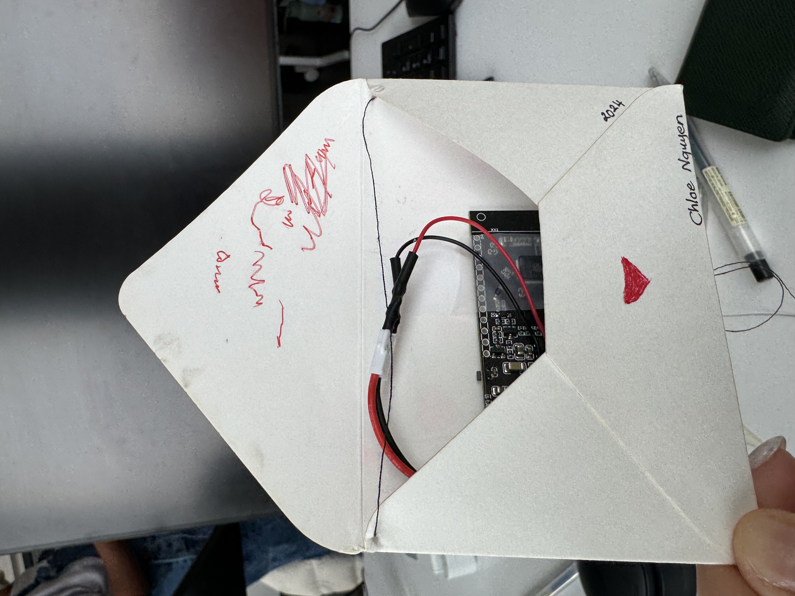
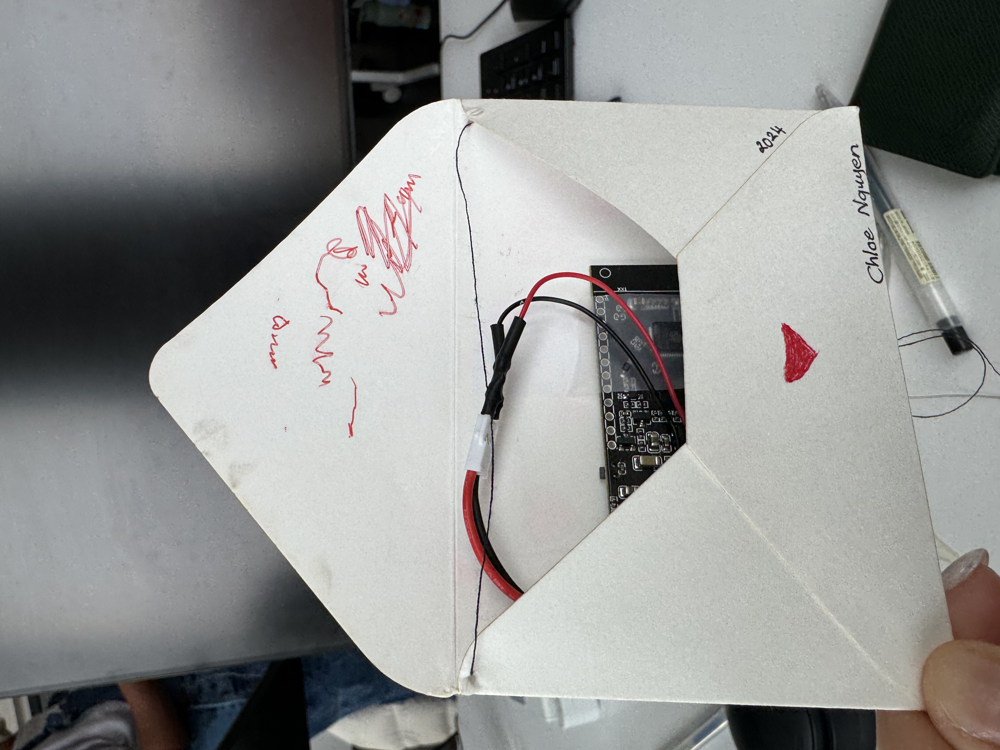
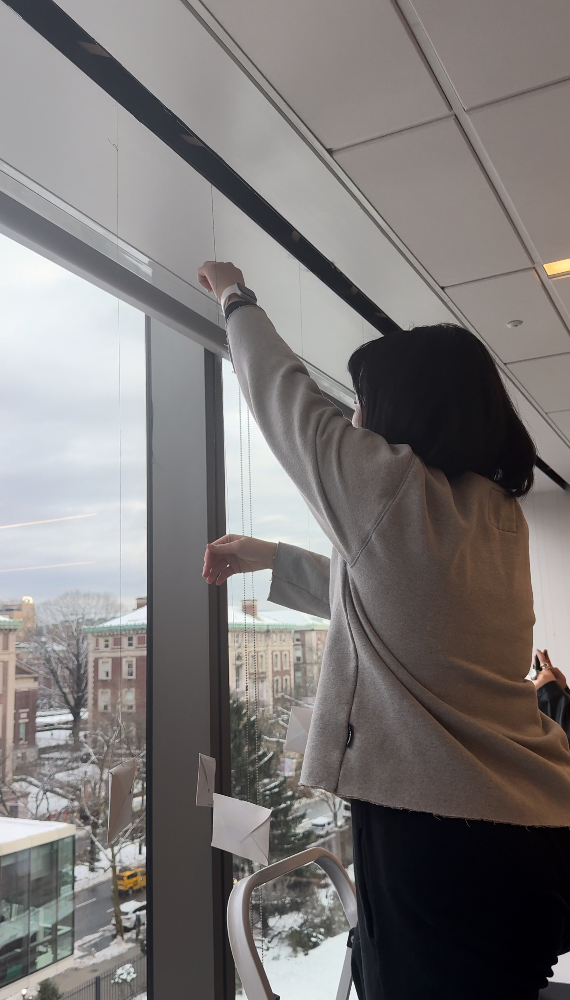

ESP32 Valentine's Installation
Love is in the air!
by Chloe Nguyen
The final product
In the lounge of the Milstein library's fifth floor, amidst the silent whispers of knowledge and history, a unique art installation came to life. This project marks a collaborative effort of the COMS3930 Creative Embedded Systems class, bringing together the creative young technologists to celebrate art and love.
The Vision Behind the Art
As Valentine's Day approached, the decision to embed the essence of love into my generative art seemed almost serendipitous. The concept was simple: to use the technology at our fingertips to visualize texts that hold meaning to us. For my contribution, I chose a medium that's close to my heart – a poem by my boyfriend, a testament to our affection and a question that bridges the gap between two hearts. This poem, a series of lines asking me to be his Valentine's, became the soul of my module.
The poem that inspired this installation
I wanted to create a visual representation of love, symbolized by little red hearts ascending on the screen of an ESP32 TTGO T-display, each heartbeat a step closer to the unity and acceptance we seek in love. This visual metaphor, paired with the verses of the poem, aimed to capture the viewer's imagination, allowing them to float alongside these hearts in a shared experience of hope and affection.
The Technical Process
All you need is:
- ESP32 TTGO T-display
- Arduino IDE
- USB-C cable
- 3.7V 500mAh battery
- Wires
- Soldering iron
- Envelopes
- Scissors
- Glue
- Tape
- Printer
- Cardstock
- Marker
- Popcicle stick
- An idea
Blue print of the envelope used in the installation
The materials used in the production of the installation
The technical aspect of this project was as challenging as it was rewarding. Utilizing the ESP32 TTGO T-display, a compact and amazing device, I began the journey through with TFT programming. The goal was to give life into my vision: to have red hearts dynamically float from the bottom of the screen, varying in size and speed, all the while displaying lines from the poem that inspired this creation.
Programming the ESP32 in process
The process involved a fun process of programming. Each heart, as an object, is created using the classic 2 circles and a triangle combination, along with different sizes and speeds. The movement was a delicate balance of a variety of randomness, ensuring that the display remained engaging and visually appealing. The poem's presentation, timed to share each line with different height, indicating where the poem starts and ends, giving it a more intuitive sense to read.
However, the journey wasn't without its hurdles. Powering the device with a battery and ensuring its longevity for the installation period was a problem. The balance between display brightness, refresh rates, and power consumption, with consideration of the LED display, required careful calibration, especially when we would want the device to last for 4 hours, a testament to the technical nuances that often go unnoticed in the final spectacle. After a debate, I decided to leave the device be with full brightness with no sleep in between. To me, love is bright, burning, and constant. My intepretation of love doesn't involve a break in between or a dimmed passion. Love is supposed to be stupidly brilliant until it dies. Therefore, my display remains vivid and intense until it dies.
Decorating the envelope
Moreover, the physical aspect of preparing the device – from soldering the battery connections (which was done by Professor Santolucito) to crafting the paper envelope that would become its home – added a hands-on dimension to the project. It was a reminder of the tangible connection between artist, tool, and creation.
 

Taping the ESP32 in along with the battery, plugged in
Final look
Hanging the final product up
A Technological Harmony
The goal of this project was more than just an individual achievement; it was a symphony ESP32 devices hanging in the hallway, each carrying a melody of creative expression. Together, we transformed a space into a narrative, a collective exploration of what it means to be young, in love, and technologically adept.
For other artists venturing into the world of generative art with similar hardware, this journey might be able to serve as both inspiration and a guide. The challenges encountered are milestones on the path to creation. They are not just obstacles but opportunities to innovate and persevere.
This module is more than just a piece of generative art; it's a love letter, a technological ode to the emotion that binds us all. Through the fusion of poetry, programming, and personal narrative, this project stands as a testament to the power of creative collaboration. It's a reminder that at the intersection of technology and art lies the potential to express our deepest sentiments, to celebrate love or any other emotions in all its forms.
As viewers wandered the hallway, engaging with our installation, the hope was for them to feel a part of our collective story, to see in each floating heart a reflection of their own experiences and aspirations.